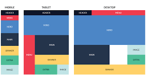
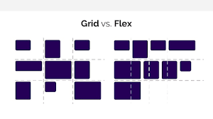
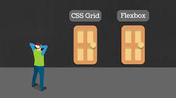

EN LA SIGUIENTE PAGUINA WEB SE PRETENDE EVIDENCIAR LA IMPORTANCIA DE FLEXBOX Y CSS GRID
TODO LO QUE DEBES SABER
ebate CSS Grid vs flexbox es actualmente el tema más candente en la comunidad CSS. Si sigues las noticias del sector, habrás visto surgir últimamente muchos geniales artículos, tales como:
Rachel Andrew blogueó sobre esta cuestión ya en 2016 y más tarde continuó el debate en más detalle.
Michelle Barker también respondió al hilo de Twitter de Chris escribiendo otro excelente artículo sobre el tema Grid vs flexbox en su popular blog CSS {In real Life}.
La comunidad MDN ha creado algunos exhaustivos documentos sobre las diferencias fundamentales entre Grid y flexbox, que son a día de hoy la mejor documentación disponible sobre el tema.
También puedes encontrar muchas otras entradas de blog, artículos, videos y debates en relación al tema en toda la web. Como es probable que el tema se mantenga relevante en el futuro, te recomendaría la lectura de algunos de los anteriores artículos y que desarrolles tu propia postura sobre la cuestión, ya que nada está todavía determinado de forma definitiva.
Que es Flexbox
Por que Flex
Se llama Flex porque tenemos un contenedor, llamado contenedor Flex, que es el elemento que contiene la propiedad display:flex. Desde ese contenedor vamos a poder especificar la alineación de los elementos que hay dentro, el tamaño de los elementos que contienen y distribuir el espacio restante que hay entre los elementos del contenedor Flex, y todo esto en una sola dirección, ya sea una horizontal o vertical. Es decir, podemos distribuir los elementos que contiene la etiqueta sin poner nada dentro de esos elementos
Flex a nivel visual
Ambos son contenedores Flex, el primero es un contenedor Flex a nivel horizontal que contiene tres elementos flexibles, el segundo es un contenedor Flex a nivel vertical que contiene tres elementos flexibles. Únicamente dando propiedades al contenedor Flex podemos alinear todos los elementos que están dentro del mismo.
¿QUÉ ES LO MAS IMPORTANTE?

Hace poco hablábamos de Flexbox, uno de los mecanismos de CSS más útiles en la maquetación de páginas web, incluso lo enfrentábamos con Grid. Sin embargo, teníamos pendiente profundizar un poco más en el propio CSS Grid , otro de los recursos de diseño CSS para disponer con mayor libertad los elementos en una página web o aplicación, algo que hacemos en este artículo.
Como las últimas versiones de los navegadores ya ofrecen soporte para CSS Grid, sólo es necesario familiarizarse con su forma de trabajar de rejilla y aplicar el nuevo display: grid con el que comenzaremos a usar todas sus característicaspara posicionar los elementos en la página:
Ofrece un control total de las dos dimensiones.
La ubicación de los ítems es libre; no es una tabla.
Es posible colocar los ítem donde necesitemos, en cualquiera de las celdas que el Grid describe, incluso en celdas que no has descrito.
¿Qué hay de nuevo en CSS Grid?
CSS Grid es un modelo de maquetación CSS en base a una rejilla, algo que podría no parecer tan novedoso, si tenemos en cuenta que diversas librerías de CSS lo habían intentado ya. Sistemas como 960 Grid System fueron pioneros en crear una base de código CSS para que los diseñadores pudieran posicionar los elementos en una distribución de filas y columnas. El propio Bootstrap incluye entre otras cosas un sistema de rejilla. Al final, estos sistemas funcionaron pero tenían varios problemas:
Agregaban peso al CSS, con código de cientos de clases que muchas veces ni siquiera llegabas a usar. Habia que aplicar constantemente clases y nombre que ensuciaban mucho el HTML.
Creaba código de muy difícil mantenimiento, haciendo que el proyecto estuviera ligado de manera muy directa con un sistema propietario
Grid vs Flexbox

Como veíamos en ¿Grid o Flexbox? ¿Qué resulta más útil en diseño y maquetación web?, Grid va un paso más allá de Flexbox y utiliza las dos dimensiones mientras que Flexbox aplica sólo una. Con Flexbox sólo podías definir qué es lo que tenían que hacer los items en el eje horizontal o en el eje vertical. Cuando en el eje vertical u horizontal se terminaba el espacio, entonces los items se iban colocando dependiendo de las configuración de los atributos Flexbox. Por ejemplo, en el caso de usar flex-wrap, cuando llegaba un ítem que no cabía en la horizontal, se iba a la siguiente fila. Pero tú no controlas esas dos filas, los propios ítems son los que se van acomodando. Te recomendamos consultar los tutoriales de Flexbox que hemos publicado recientemente.
NOTICIAS SOBRE FLEXBOS Y CSS GRIDL

NOTICIAS MAS IMPORTANTES
Grid y flexbox. La diferencia básica entre CSS Grid Layout y CSS Flexbox Layout es que Flexbox se creó para diseños de una dimensión, en una fila o una columna. En cambio CSS Grid Layout se pensó para el diseño bidimensional, en varias filas y columnas al mismo tiempo.
CSS Grid es mejor para la construcción general de nuestra página, ya que es más fácil modelar nuestra plantilla, y se pueden crear diseños más asimétricos y peculiares. CSS Grid en diseños con filas y columnas. Flexbox es mejor alineando el contenido dentro de los diferentes elementos de la web
Como se ha podido ver durante todo el artículo, no hay una solución mejor que otra. El mejor sistema de trabajo por el que podemos optar es usar tanto Flexbox como CSS Grid en nuestros proyectos de forma conjunta, ya que cada uno tiene sus puntos fuertes en diferentes cosas. CSS Grid es mejor para la construcción general de nuestra página, ya que es más fácil modelar nuestra plantilla, y se pueden crear diseños más asimétricos y peculiares. CSS Grid en diseños con filas y columnas. Flexbox es mejor alineando el contenido dentro de los diferentes elementos de la web. Flexbox en diseños con filas o columnas. Funciona mejor en una dimensión. Por todo esto, no hay motivos para usar solo Flexbox o CSS Grid. Te recomendamos aprender ambos y usarlos de manera conjunta en tus proyectos.
LO APRENDIDO DE DE LA CREACION WEB
Del anteriror trabajo se puede evidenciar el uso de diferentes herraminetas reconocimiento primeramante el uno del HTML5 y CSS3 y logrando implemntar satisfactoriamnete felx BOx Y CSS GRID
Autor
Informacion personal
Soy estudiante de Ingeniería de Sistemas, vivo en la ciudad de Bogotá y pertenezco al CEAD Jorge Acevedo y Gómez.
Trabajo actualmente en una EPS en Liquidación liderando el proceso de Recobros de la organización.
Me gusta bailar, escuchar música y asistir a conciertos